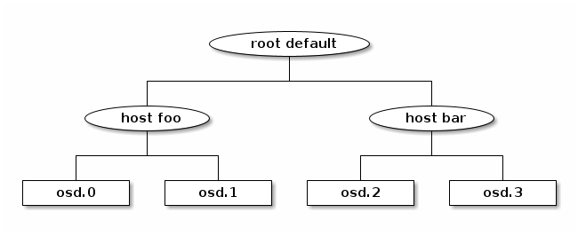

Notice
This document is for a development version of Ceph.
CRUSH Maps
The CRUSH algorithm computes storage locations in order to determine how to store and retrieve data. CRUSH allows Ceph clients to communicate with OSDs directly rather than through a centralized server or broker. By using an algorithmically-determined method of storing and retrieving data, Ceph avoids a single point of failure, a performance bottleneck, and a physical limit to its scalability.
CRUSH uses a map of the cluster (the CRUSH map) to map data to OSDs, distributing the data across the cluster in accordance with configured replication policy and failure domains. For a detailed discussion of CRUSH, see CRUSH - Controlled, Scalable, Decentralized Placement of Replicated Data
CRUSH maps contain a list of OSDs and a
hierarchy of “buckets” (hosts, racks) and rules that govern how CRUSH
replicates data within the cluster’s pools. By reflecting the underlying
physical organization of the installation, CRUSH can model (and thereby
address) the potential for correlated device failures. Some factors relevant
to the CRUSH hierarchy include chassis, racks, physical proximity, a shared
power source, shared networking, and failure domains. By encoding this
information into the CRUSH map, CRUSH placement policies distribute object
replicas across failure domains while maintaining the desired distribution. For
example, to address the possibility of concurrent failures, it might be
desirable to ensure that data replicas are on devices that reside in or rely
upon different shelves, racks, power supplies, controllers, or physical
locations.
When OSDs are deployed, they are automatically added to the CRUSH map under a
host bucket that is named for the node on which the OSDs run. This
behavior, combined with the configured CRUSH failure domain, ensures that
replicas or erasure-code shards are distributed across hosts and that the
failure of a single host or other kinds of failures will not affect
availability. For larger clusters, administrators must carefully consider their
choice of failure domain. For example, distributing replicas across racks is
typical for mid- to large-sized clusters.
CRUSH Location
The location of an OSD within the CRUSH map’s hierarchy is referred to as its
CRUSH location. The specification of a CRUSH location takes the form of a
list of key-value pairs. For example, if an OSD is in a particular row, rack,
chassis, and host, and is also part of the ‘default’ CRUSH root (which is the
case for most clusters), its CRUSH location can be specified as follows:
root=default row=a rack=a2 chassis=a2a host=a2a1
Note
The order of the keys does not matter.
The key name (left of
=) must be a valid CRUSHtype. By default, valid CRUSH types includeroot,datacenter,room,row,pod,pdu,rack,chassis, andhost. These defined types suffice for nearly all clusters, but can be customized by modifying the CRUSH map.
The CRUSH location for an OSD can be set by adding the crush_location
option in ceph.conf, example:
crush_location = root=default row=a rack=a2 chassis=a2a host=a2a1
When this option has been added, every time the OSD
starts it verifies that it is in the correct location in the CRUSH map and
moves itself if it is not. To disable this automatic CRUSH map management, add
the following to the ceph.conf configuration file in the [osd]
section:
osd_crush_update_on_start = false
Note that this action is unnecessary in most cases.
If the crush_location is not set explicitly,
a default of root=default host=HOSTNAME is used for OSD``s,
where the hostname is determined by the output of the ``hostname -s command.
Note
If you switch from this default to an explicitly set crush_location,
do not forget to include root=default because existing CRUSH rules refer to it.
Custom location hooks
A custom location hook can be used to generate a more complete CRUSH location, on startup.
This is useful when some location fields are not known at the time
ceph.conf is written (for example, fields rack or datacenter
when deploying a single configuration across multiple datacenters).
If configured, executed, and parsed successfully, the hook’s output replaces any previously set CRUSH location.
The hook hook can be enabled in ceph.conf by providing a path to an
executable file (often a script), example:
crush_location_hook = /path/to/customized-ceph-crush-location
This hook is passed several arguments (see below). The hook outputs a single
line to stdout that contains the CRUSH location description. The arguments
resemble the following::
--id ID --type TYPE
Here the id is the daemon
identifier or (in the case of OSDs) the OSD number, and the daemon type is
osd, mds, mgr, or mon.
For example, a simple hook that specifies a rack location via a value in the
file /etc/rack (assuming it contains no spaces) might be as follows:
#!/bin/sh
echo "root=default rack=$(cat /etc/rack) host=$(hostname -s)"
CRUSH structure
The CRUSH map consists of (1) a hierarchy that describes the physical topology of the cluster and (2) a set of rules that defines data placement policy. The hierarchy has devices (OSDs) at the leaves and internal nodes corresponding to other physical features or groupings: hosts, racks, rows, data centers, and so on. The rules determine how replicas are placed in terms of that hierarchy (for example, ‘three replicas in different racks’).
Devices
Devices are individual OSDs that store data (usually one device for each
storage drive). Devices are identified by an id (a non-negative integer)
and a name (usually osd.N, where N is the device’s id).
In Luminous and later releases, OSDs can have a device class assigned (for
example, hdd or ssd or nvme), allowing them to be targeted by CRUSH
rules. Device classes are especially useful when mixing device types within
hosts.
Types and Buckets
“Bucket”, in the context of CRUSH, is a term for any of the internal nodes in the hierarchy: hosts, racks, rows, and so on. The CRUSH map defines a series of types that are used to identify these nodes. Default types include:
osd(ordevice)hostchassisrackrowpdupodroomdatacenterzoneregionroot
Most clusters use only a handful of these types, and other types can be defined as needed.
The hierarchy is built with devices (normally of type osd) at the leaves
and non-device types as the internal nodes. The root node is of type root.
For example:

Each node (device or bucket) in the hierarchy has a weight that indicates the
relative proportion of the total data that should be stored by that device or
hierarchy subtree. Weights are set at the leaves, indicating the size of the
device. These weights automatically sum in an ‘up the tree’ direction: that is,
the weight of the root node will be the sum of the weights of all devices
contained under it. Weights are typically measured in tebibytes (TiB).
To get a simple view of the cluster’s CRUSH hierarchy, including weights, run the following command:
ceph osd tree
Rules
CRUSH rules define policy governing how data is distributed across the devices in the hierarchy. The rules define placement as well as replication strategies or distribution policies that allow you to specify exactly how CRUSH places data replicas. For example, you might create one rule selecting a pair of targets for two-way mirroring, another rule for selecting three targets in two different data centers for three-way replication, and yet another rule for erasure coding across six storage devices. For a detailed discussion of CRUSH rules, see Section 3.2 of CRUSH - Controlled, Scalable, Decentralized Placement of Replicated Data.
CRUSH rules can be created via the command-line by specifying the pool type that they will govern (replicated or erasure coded), the failure domain, and optionally a device class. In rare cases, CRUSH rules must be created by manually editing the CRUSH map.
To see the rules that are defined for the cluster, run the following command:
ceph osd crush rule ls
To view the contents of the rules, run the following command:
ceph osd crush rule dump
Device classes
Each device can optionally have a class assigned. By default, OSDs automatically set their class at startup to hdd, ssd, or nvme in accordance with the type of device they are backed by.
To explicitly set the device class of one or more OSDs, run a command of the following form:
ceph osd crush set-device-class <class> <osd-name> [...]
Once a device class has been set, it cannot be changed to another class until the old class is unset. To remove the old class of one or more OSDs, run a command of the following form:
ceph osd crush rm-device-class <osd-name> [...]
This restriction allows administrators to set device classes that won’t be changed on OSD restart or by a script.
To create a placement rule that targets a specific device class, run a command of the following form:
ceph osd crush rule create-replicated <rule-name> <root> <failure-domain> <class>
To apply the new placement rule to a specific pool, run a command of the following form:
ceph osd pool set <pool-name> crush_rule <rule-name>
Device classes are implemented by creating one or more “shadow” CRUSH hierarchies. For each device class in use, there will be a shadow hierarchy that contains only devices of that class. CRUSH rules can then distribute data across the relevant shadow hierarchy. This approach is fully backward compatible with older Ceph clients. To view the CRUSH hierarchy with shadow items displayed, run the following command:
ceph osd crush tree --show-shadow
Some older clusters that were created before the Luminous release rely on manually crafted CRUSH maps to maintain per-device-type hierarchies. For these clusters, there is a reclassify tool available that can help them transition to device classes without triggering unwanted data movement (see Migrating from a legacy SSD rule to device classes).
Weight sets
A weight set is an alternative set of weights to use when calculating data placement. The normal weights associated with each device in the CRUSH map are set in accordance with the device size and indicate how much data should be stored where. However, because CRUSH is a probabilistic pseudorandom placement process, there is always some variation from this ideal distribution (in the same way that rolling a die sixty times will likely not result in exactly ten ones and ten sixes). Weight sets allow the cluster to perform numerical optimization based on the specifics of your cluster (for example: hierarchy, pools) to achieve a balanced distribution.
Ceph supports two types of weight sets:
A compat weight set is a single alternative set of weights for each device and each node in the cluster. Compat weight sets cannot be expected to correct all anomalies (for example, PGs for different pools might be of different sizes and have different load levels, but are mostly treated alike by the balancer). However, they have the major advantage of being backward compatible with previous versions of Ceph. This means that even though weight sets were first introduced in Luminous v12.2.z, older clients (for example, Firefly) can still connect to the cluster when a compat weight set is being used to balance data.
A per-pool weight set is more flexible in that it allows placement to be optimized for each data pool. Additionally, weights can be adjusted for each position of placement, allowing the optimizer to correct for a subtle skew of data toward devices with small weights relative to their peers (an effect that is usually apparent only in very large clusters but that can cause balancing problems).
When weight sets are in use, the weights associated with each node in the
hierarchy are visible in a separate column (labeled either as (compat) or
as the pool name) in the output of the following command:
ceph osd tree
If both compat and per-pool weight sets are in use, data placement for a particular pool will use its own per-pool weight set if present. If only compat weight sets are in use, data placement will use the compat weight set. If neither are in use, data placement will use the normal CRUSH weights.
Although weight sets can be set up and adjusted manually, we recommend enabling
the ceph-mgr balancer module to perform these tasks automatically if the
cluster is running Luminous or a later release.
Modifying the CRUSH map
Adding/Moving an OSD
Note
Under normal conditions, OSDs automatically add themselves to the CRUSH map when they are created. The command in this section is rarely needed.
To add or move an OSD in the CRUSH map of a running cluster, run a command of the following form:
ceph osd crush set {name} {weight} root={root} [{bucket-type}={bucket-name} ...]
For details on this command’s parameters, see the following:
name- Description:
The full name of the OSD.
- Type:
String
- Required:
Yes
- Example:
osd.0
weight- Description:
The CRUSH weight of the OSD. Normally, this is its size, as measured in terabytes (TB).
- Type:
Double
- Required:
Yes
- Example:
2.0
root- Description:
The root node of the CRUSH hierarchy in which the OSD resides (normally
default).- Type:
Key-value pair.
- Required:
Yes
- Example:
root=default
bucket-type- Description:
The OSD’s location in the CRUSH hierarchy.
- Type:
Key-value pairs.
- Required:
No
- Example:
datacenter=dc1 room=room1 row=foo rack=bar host=foo-bar-1
In the following example, the command adds osd.0 to the hierarchy, or moves
osd.0 from a previous location:
ceph osd crush set osd.0 1.0 root=default datacenter=dc1 room=room1 row=foo rack=bar host=foo-bar-1
Adjusting OSD weight
Note
Under normal conditions, OSDs automatically add themselves to the CRUSH map with the correct weight when they are created. The command in this section is rarely needed.
To adjust an OSD’s CRUSH weight in a running cluster, run a command of the following form:
ceph osd crush reweight {name} {weight}
For details on this command’s parameters, see the following:
name- Description:
The full name of the OSD.
- Type:
String
- Required:
Yes
- Example:
osd.0
weight- Description:
The CRUSH weight of the OSD.
- Type:
Double
- Required:
Yes
- Example:
2.0
Removing an OSD
Note
OSDs are normally removed from the CRUSH map as a result of the ceph osd purge` command. This command is rarely needed.
To remove an OSD from the CRUSH map of a running cluster, run a command of the following form:
ceph osd crush remove {name}
For details on the name parameter, see the following:
name- Description:
The full name of the OSD.
- Type:
String
- Required:
Yes
- Example:
osd.0
Adding a CRUSH Bucket
Note
Buckets are implicitly created when an OSD is added and the command
that creates it specifies a {bucket-type}={bucket-name} as part of the
OSD’s location (provided that a bucket with that name does not already
exist). The command in this section is typically used when manually
adjusting the structure of the hierarchy after OSDs have already been
created. One use of this command is to move a series of hosts to a new
rack-level bucket. Another use of this command is to add new host
buckets (OSD nodes) to a dummy root so that the buckets don’t receive
any data until they are ready to receive data. When they are ready, move the
buckets to the default root or to any other root as described below.
To add a bucket in the CRUSH map of a running cluster, run a command of the following form:
ceph osd crush add-bucket {bucket-name} {bucket-type}
For details on this command’s parameters, see the following:
bucket-name- Description:
The full name of the bucket.
- Type:
String
- Required:
Yes
- Example:
rack12
bucket-type- Description:
The type of the bucket. This type must already exist in the CRUSH hierarchy.
- Type:
String
- Required:
Yes
- Example:
rack
In the following example, the command adds the rack12 bucket to the hierarchy:
ceph osd crush add-bucket rack12 rack
Moving a Bucket
To move a bucket to a different location or position in the CRUSH map hierarchy, run a command of the following form:
ceph osd crush move {bucket-name} {bucket-type}={bucket-name}, [...]
For details on this command’s parameters, see the following:
bucket-name- Description:
The name of the bucket that you are moving.
- Type:
String
- Required:
Yes
- Example:
foo-bar-1
bucket-type- Description:
The bucket’s new location in the CRUSH hierarchy.
- Type:
Key-value pairs.
- Required:
No
- Example:
datacenter=dc1 room=room1 row=foo rack=bar host=foo-bar-1
Renaming a bucket
To rename a bucket while maintaining its position in the CRUSH map hierarchy, run a command of the following form:
ceph osd crush rename-bucket {oldname} {newname}
Removing a Bucket
To remove a bucket from the CRUSH hierarchy, run a command of the following form:
ceph osd crush remove {bucket-name}
Note
A bucket must already be empty before it is removed from the CRUSH hierarchy. In other words, there must not be OSDs or any other CRUSH buckets within it.
For details on the bucket-name parameter, see the following:
bucket-name- Description:
The name of the bucket that is being removed.
- Type:
String
- Required:
Yes
- Example:
rack12
In the following example, the command removes the rack12 bucket from the
hierarchy:
ceph osd crush remove rack12
Creating a compat weight set
Note
Normally this action is done automatically if needed by the
balancer module (provided that the module is enabled).
To create a compat weight set, run the following command:
ceph osd crush weight-set create-compat
To adjust the weights of the compat weight set, run a command of the following form:
ceph osd crush weight-set reweight-compat {name} {weight}
To destroy the compat weight set, run the following command:
ceph osd crush weight-set rm-compat
Creating per-pool weight sets
To create a weight set for a specific pool, run a command of the following form:
ceph osd crush weight-set create {pool-name} {mode}
Note
Per-pool weight sets can be used only if all servers and daemons are running Luminous v12.2.z or a later release.
For details on this command’s parameters, see the following:
pool-name- Description:
The name of a RADOS pool.
- Type:
String
- Required:
Yes
- Example:
rbd
mode- Description:
Either
flatorpositional. A flat weight set assigns a single weight to all devices or buckets. A positional weight set has a potentially different weight for each position in the resulting placement mapping. For example: if a pool has a replica count of3, then a positional weight set will have three weights for each device and bucket.- Type:
String
- Required:
Yes
- Example:
flat
To adjust the weight of an item in a weight set, run a command of the following form:
ceph osd crush weight-set reweight {pool-name} {item-name} {weight [...]}
To list existing weight sets, run the following command:
ceph osd crush weight-set ls
To remove a weight set, run a command of the following form:
ceph osd crush weight-set rm {pool-name}
Creating a rule for a replicated pool
When you create a CRUSH rule for a replicated pool, there is an important
decision to make: selecting a failure domain. For example, if you select a
failure domain of host, then CRUSH will ensure that each replica of the
data is stored on a unique host. Alternatively, if you select a failure domain
of rack, then each replica of the data will be stored in a different rack.
Your selection of failure domain should be guided by the size and its CRUSH
topology.
The entire cluster hierarchy is typically nested beneath a root node that is
named default. If you have customized your hierarchy, you might want to
create a rule nested beneath some other node in the hierarchy. In creating
this rule for the customized hierarchy, the node type doesn’t matter, and in
particular the rule does not have to be nested beneath a root node.
It is possible to create a rule that restricts data placement to a specific
class of device. By default, Ceph OSDs automatically classify themselves as
either hdd or ssd in accordance with the underlying type of device
being used. These device classes can be customized. One might set the device
class of OSDs to nvme to distinguish the from SATA SSDs, or one might set
them to something arbitrary like ssd-testing or ssd-ethel so that rules
and pools may be flexibly constrained to use (or avoid using) specific subsets
of OSDs based on specific requirements.
To create a rule for a replicated pool, run a command of the following form:
ceph osd crush rule create-replicated {name} {root} {failure-domain-type} [{class}]
For details on this command’s parameters, see the following:
name- Description:
The name of the rule.
- Type:
String
- Required:
Yes
- Example:
rbd-rule
root- Description:
The name of the CRUSH hierarchy node under which data is to be placed.
- Type:
String
- Required:
Yes
- Example:
default
failure-domain-type- Description:
The type of CRUSH nodes used for the replicas of the failure domain.
- Type:
String
- Required:
Yes
- Example:
rack
class- Description:
The device class on which data is to be placed.
- Type:
String
- Required:
No
- Example:
ssd
Creating a rule for an erasure-coded pool
For an erasure-coded pool, similar decisions need to be made: what the failure
domain is, which node in the hierarchy data will be placed under (usually
default), and whether placement is restricted to a specific device class.
However, erasure-code pools are created in a different way: there is a need to
construct them carefully with reference to the erasure code plugin in use. For
this reason, these decisions must be incorporated into the erasure-code
profile. A CRUSH rule will then be created from the erasure-code profile,
either explicitly or automatically when the profile is used to create a pool.
To list the erasure-code profiles, run the following command:
ceph osd erasure-code-profile ls
To view a specific existing profile, run a command of the following form:
ceph osd erasure-code-profile get {profile-name}
Under normal conditions, profiles should never be modified; instead, a new profile should be created and used when creating either a new pool or a new rule for an existing pool.
An erasure-code profile consists of a set of key-value pairs. Most of these
key-value pairs govern the behavior of the erasure code that encodes data in
the pool. However, key-value pairs that begin with crush- govern the CRUSH
rule that is created.
The relevant erasure-code profile properties are as follows:
crush-root: the name of the CRUSH node under which to place data [default:
default].crush-failure-domain: the CRUSH bucket type used in the distribution of erasure-coded shards [default:
host].crush-osds-per-failure-domain: Maximum number of OSDs to place in each failure domain -- defaults to 1. Using a value greater than one will cause a CRUSH MSR rule to be created, see below. Must be specified if
crush-num-failure-domainsis specified.crush-num-failure-domains: Number of failure domains to map. Must be specified if
crush-osds-per-failure-domainis specified. Results in a CRUSH MSR rule being created.crush-device-class: the device class on which to place data [default: none, which means that all devices are used].
k and m (and, for the
lrcplugin, l): these determine the number of erasure-code shards, affecting the resulting CRUSH rule.After a profile is defined, you can create a CRUSH rule by running a command of the following form:
ceph osd crush rule create-erasure {name} {profile-name}
CRUSH MSR Rules
Creating an erasure-code profile with a crush-osds-per-failure-domain
value greater than one will cause a CRUSH MSR rule type to be created
instead of a normal CRUSH rule. Normal crush rules cannot retry prior
steps when an out OSD is encountered and rely on CHOOSELEAF steps to
permit moving OSDs to new hosts. However, CHOOSELEAF rules don’t
support more than a single OSD per failure domain. MSR rules, new in
squid, support multiple OSDs per failure domain by retrying all prior
steps when an out OSD is encountered. Using MSR rules requires that
OSDs and clients be required to support the CRUSH_MSR feature bit
(squid or newer).
Deleting rules
To delete rules that are not in use by pools, run a command of the following form:
ceph osd crush rule rm {rule-name}
Tunables
The CRUSH algorithm that is used to calculate the placement of data has been improved over time. In order to support changes in behavior, we have provided users with sets of tunables that determine which legacy or optimal version of CRUSH is to be used.
In order to use newer tunables, all Ceph clients and daemons must support the
new major release of CRUSH. Because of this requirement, we have created
profiles that are named after the Ceph version in which they were
introduced. For example, the firefly tunables were first supported by the
Firefly release and do not work with older clients (for example, clients
running Dumpling). After a cluster’s tunables profile is changed from a legacy
set to a newer or optimal set, the ceph-mon and ceph-osd options
will prevent older clients that do not support the new CRUSH features from
connecting to the cluster.
argonaut (legacy)
The legacy CRUSH behavior used by Argonaut and older releases works fine for
most clusters, provided that not many OSDs have been marked out.
bobtail (CRUSH_TUNABLES2)
The bobtail tunable profile provides the following improvements:
For hierarchies with a small number of devices in leaf buckets, some PGs might map to fewer than the desired number of replicas, resulting in
undersizedPGs. This is known to happen in the case of hierarchies withhostnodes that have a small number of OSDs (1 to 3) nested beneath each host.For large clusters, a small percentage of PGs might map to fewer than the desired number of OSDs. This is known to happen when there are multiple hierarchy layers in use (for example,,
row,rack,host,osd).When one or more OSDs are marked
out, data tends to be redistributed to nearby OSDs instead of across the entire hierarchy.
The tunables introduced in the Bobtail release are as follows:
choose_local_tries: Number of local retries. The legacy value is2, and the optimal value is0.
choose_local_fallback_tries: The legacy value is5, and the optimal value is 0.
choose_total_tries: Total number of attempts to choose an item. The legacy value is19, but subsequent testing indicates that a value of50is more appropriate for typical clusters. For extremely large clusters, an even larger value might be necessary.
chooseleaf_descend_once: Whether a recursivechooseleafattempt will retry, or try only once and allow the original placement to retry. The legacy default is0, and the optimal value is1.
Migration impact:
Moving from the
argonauttunables to thebobtailtunables triggers a moderate amount of data movement. Use caution on a cluster that is already populated with data.
firefly (CRUSH_TUNABLES3)
chooseleaf_vary_r
This firefly tunable profile fixes a problem with chooseleaf CRUSH step
behavior. This problem arose when a large fraction of OSDs were marked out, which resulted in PG mappings with too few OSDs.
This profile was introduced in the Firefly release, and adds a new tunable as follows:
chooseleaf_vary_r: Whether a recursive chooseleaf attempt will start with a non-zero value ofr, as determined by the number of attempts the parent has already made. The legacy default value is0, but with this value CRUSH is sometimes unable to find a mapping. The optimal value (in terms of computational cost and correctness) is1.
Migration impact:
For existing clusters that store a great deal of data, changing this tunable from
0to1will trigger a large amount of data migration; a value of4or5will allow CRUSH to still find a valid mapping and will cause less data to move.
straw_calc_version tunable
There were problems with the internal weights calculated and stored in the
CRUSH map for straw algorithm buckets. When there were buckets with a CRUSH
weight of 0 or with a mix of different and unique weights, CRUSH would
distribute data incorrectly (that is, not in proportion to the weights).
This tunable, introduced in the Firefly release, is as follows:
straw_calc_version: A value of0preserves the old, broken internal-weight calculation; a value of1fixes the problem.
Migration impact:
Changing this tunable to a value of
1and then adjusting a straw bucket (either by adding, removing, or reweighting an item or by using the reweight-all command) can trigger a small to moderate amount of data movement provided that the cluster has hit one of the problematic conditions.
This tunable option is notable in that it has absolutely no impact on the required kernel version in the client side.
hammer (CRUSH_V4)
The hammer tunable profile does not affect the mapping of existing CRUSH
maps simply by changing the profile. However:
There is a new bucket algorithm supported:
straw2. This new algorithm fixes several limitations in the originalstraw. More specifically, the oldstrawbuckets would change some mappings that should not have changed when a weight was adjusted, whilestraw2achieves the original goal of changing mappings only to or from the bucket item whose weight has changed.The
straw2type is the default type for any newly created buckets.
Migration impact:
Changing a bucket type from
strawtostraw2will trigger a small amount of data movement, depending on how much the bucket items’ weights vary from each other. When the weights are all the same no data will move, and the more variance there is in the weights the more movement there will be.
jewel (CRUSH_TUNABLES5)
The jewel tunable profile improves the overall behavior of CRUSH. As a
result, significantly fewer mappings change when an OSD is marked out of
the cluster. This improvement results in significantly less data movement.
The new tunable introduced in the Jewel release is as follows:
chooseleaf_stable: Determines whether a recursive chooseleaf attempt will use a better value for an inner loop that greatly reduces the number of mapping changes when an OSD is markedout. The legacy value is0, and the new value of1uses the new approach.
Migration impact:
Changing this value on an existing cluster will result in a very large amount of data movement because nearly every PG mapping is likely to change.
Client versions that support CRUSH_TUNABLES2
v0.55 and later, including Bobtail (v0.56.x)
Linux kernel version v3.9 and later (for the CephFS and RBD kernel clients)
Client versions that support CRUSH_TUNABLES3
v0.78 (Firefly) and later
Linux kernel version v3.15 and later (for the CephFS and RBD kernel clients)
Client versions that support CRUSH_V4
v0.94 (Hammer) and later
Linux kernel version v4.1 and later (for the CephFS and RBD kernel clients)
Client versions that support CRUSH_TUNABLES5
v10.0.2 (Jewel) and later
Linux kernel version v4.5 and later (for the CephFS and RBD kernel clients)
“Non-optimal tunables” warning
In v0.74 and later versions, Ceph will raise a health check (“HEALTH_WARN crush
map has non-optimal tunables”) if any of the current CRUSH tunables have
non-optimal values: that is, if any fail to have the optimal values from the
:ref:` default profile
<rados_operations_crush_map_default_profile_definition>`. There are two
different ways to silence the alert:
Adjust the CRUSH tunables on the existing cluster so as to render them optimal. Making this adjustment will trigger some data movement (possibly as much as 10%). This approach is generally preferred to the other approach, but special care must be taken in situations where data movement might affect performance: for example, in production clusters. To enable optimal tunables, run the following command:
ceph osd crush tunables optimalThere are several potential problems that might make it preferable to revert to the previous values of the tunables. The new values might generate too much load for the cluster to handle, the new values might unacceptably slow the operation of the cluster, or there might be a client-compatibility problem. Such client-compatibility problems can arise when using old-kernel CephFS or RBD clients, or pre-Bobtail
libradosclients. To revert to the previous values of the tunables, run the following command:ceph osd crush tunables legacyTo silence the alert without making any changes to CRUSH, add the following option to the
[mon]section of your ceph.conf file:mon_warn_on_legacy_crush_tunables = false
In order for this change to take effect, you will need to either restart the monitors or run the following command to apply the option to the monitors while they are still running:
ceph tell mon.\* config set mon_warn_on_legacy_crush_tunables false
Tuning CRUSH
When making adjustments to CRUSH tunables, keep the following considerations in mind:
Adjusting the values of CRUSH tunables will result in the shift of one or more PGs from one storage node to another. If the Ceph cluster is already storing a great deal of data, be prepared for significant data movement.
When the
ceph-osdandceph-mondaemons get the updated map, they immediately begin rejecting new connections from clients that do not support the new feature. However, already-connected clients are effectively grandfathered in, and any of these clients that do not support the new feature will malfunction.If the CRUSH tunables are set to newer (non-legacy) values and subsequently reverted to the legacy values,
ceph-osddaemons will not be required to support any of the newer CRUSH features associated with the newer (non-legacy) values. However, the OSD peering process requires the examination and understanding of old maps. For this reason, if the cluster has previously used non-legacy CRUSH values, do not run old versions of theceph-osddaemon -- even if the latest version of the map has been reverted so as to use the legacy defaults.
The simplest way to adjust CRUSH tunables is to apply them in matched sets known as profiles. As of the Octopus release, Ceph supports the following profiles:
legacy: The legacy behavior from argonaut and earlier.
argonaut: The legacy values supported by the argonaut release.
bobtail: The values supported by the bobtail release.
firefly: The values supported by the firefly release.
hammer: The values supported by the hammer release.
jewel: The values supported by the jewel release.
optimal: The best values for the current version of Ceph. .. _rados_operations_crush_map_default_profile_definition:
default: The default values of a new cluster that has been installed from scratch. These values, which depend on the current version of Ceph, are hardcoded and are typically a mix of optimal and legacy values. These values often correspond to theoptimalprofile of either the previous LTS (long-term service) release or the most recent release for which most users are expected to have up-to-date clients.
To apply a profile to a running cluster, run a command of the following form:
ceph osd crush tunables {PROFILE}
This action might trigger a great deal of data movement. Consult release notes and documentation before changing the profile on a running cluster. Consider throttling recovery and backfill parameters in order to limit the backfill resulting from a specific change.
Tuning Primary OSD Selection
When a Ceph client reads or writes data, it first contacts the primary OSD in
each affected PG’s acting set. By default, the first OSD in the acting set is
the primary OSD (also known as the “lead OSD”). For example, in the acting set
[2, 3, 4], osd.2 is listed first and is therefore the primary OSD.
However, sometimes it is clear that an OSD is not well suited to act as the
lead as compared with other OSDs (for example, if the OSD has a slow drive or a
slow controller). To prevent performance bottlenecks (especially on read
operations) and at the same time maximize the utilization of your hardware, you
can influence the selection of the primary OSD either by adjusting “primary
affinity” values, or by crafting a CRUSH rule that selects OSDs that are better
suited to act as the lead rather than other OSDs.
To determine whether tuning Ceph’s selection of primary OSDs will improve cluster performance, pool redundancy strategy must be taken into account. For replicated pools, this tuning can be especially useful, because by default read operations are served from the primary OSD of each PG. For erasure-coded pools, however, the speed of read operations can be increased by enabling fast read (see Pool settings).
Primary Affinity
Primary affinity is a characteristic of an OSD that governs the likelihood
that a given OSD will be selected as the primary OSD (or “lead OSD”) in a given
acting set. A primary affinity value can be any real number in the range 0
to 1, inclusive.
As an example of a common scenario in which it can be useful to adjust primary affinity values, let us suppose that a cluster contains a mix of drive sizes: for example, suppose it contains some older racks with 1.9 TB SATA SSDs and some newer racks with 3.84 TB SATA SSDs. The latter will on average be assigned twice the number of PGs and will thus serve twice the number of write and read operations -- they will be busier than the former. In such a scenario, you might make a rough assignment of primary affinity as inversely proportional to OSD size. Such an assignment will not be 100% optimal, but it can readily achieve a 15% improvement in overall read throughput by means of a more even utilization of SATA interface bandwidth and CPU cycles. This example is not merely a thought experiment meant to illustrate the theoretical benefits of adjusting primary affinity values; this fifteen percent improvement was achieved on an actual Ceph cluster.
By default, every Ceph OSD has a primary affinity value of 1. In a cluster
in which every OSD has this default value, all OSDs are equally likely to act
as a primary OSD.
By reducing the value of a Ceph OSD’s primary affinity, you make CRUSH less likely to select the OSD as primary in a PG’s acting set. To change the weight value associated with a specific OSD’s primary affinity, run a command of the following form:
ceph osd primary-affinity <osd-id> <weight>
The primary affinity of an OSD can be set to any real number in the range
[0-1] inclusive, where 0 indicates that the OSD may not be used as
primary and 1 indicates that the OSD is maximally likely to be used as a
primary. When the weight is between these extremes, its value indicates roughly
how likely it is that CRUSH will select the OSD associated with it as a
primary.
The process by which CRUSH selects the lead OSD is not a mere function of a simple probability determined by relative affinity values. Nevertheless, measurable results can be achieved even with first-order approximations of desirable primary affinity values.
Custom CRUSH Rules
Some clusters balance cost and performance by mixing SSDs and HDDs in the same
replicated pool. By setting the primary affinity of HDD OSDs to 0,
operations will be directed to an SSD OSD in each acting set. Alternatively,
you can define a CRUSH rule that always selects an SSD OSD as the primary OSD
and then selects HDDs for the remaining OSDs. Given this rule, each PG’s acting
set will contain an SSD OSD as the primary and have the remaining OSDs on HDDs.
For example, see the following CRUSH rule:
rule mixed_replicated_rule {
id 11
type replicated
step take default class ssd
step chooseleaf firstn 1 type host
step emit
step take default class hdd
step chooseleaf firstn 0 type host
step emit
}
This rule chooses an SSD as the first OSD. For an N-times replicated pool,
this rule selects N+1 OSDs in order to guarantee that N copies are on
different hosts, because the first SSD OSD might be colocated with any of the
N HDD OSDs.
To avoid this extra storage requirement, you might place SSDs and HDDs in
different hosts. However, taking this approach means that all client requests
will be received by hosts with SSDs. For this reason, it might be advisable to
have faster CPUs for SSD OSDs and more modest CPUs for HDD OSDs, since the
latter will under normal circumstances perform only recovery operations. Here
the CRUSH roots ssd_hosts and hdd_hosts are under a strict requirement
not to contain any of the same servers, as seen in the following CRUSH rule:
rule mixed_replicated_rule_two {
id 1
type replicated
step take ssd_hosts class ssd
step chooseleaf firstn 1 type host
step emit
step take hdd_hosts class hdd
step chooseleaf firstn -1 type host
step emit
}
Note
If a primary SSD OSD fails, then requests to the associated PG will be temporarily served from a slower HDD OSD until the PG’s data has been replicated onto the replacement primary SSD OSD.
Brought to you by the Ceph Foundation
The Ceph Documentation is a community resource funded and hosted by the non-profit Ceph Foundation. If you would like to support this and our other efforts, please consider joining now.